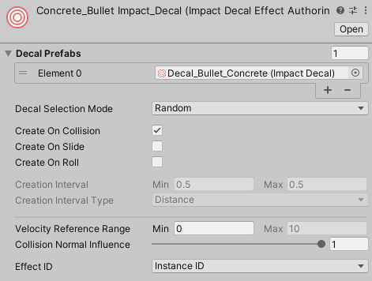
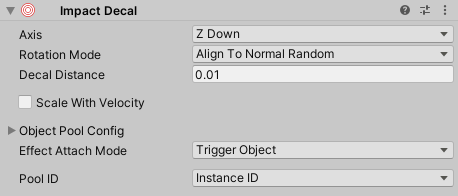

Decal Effects
Decal Effects are used to place decals on surfaces for collisions. You can create a new Decal Effect by going to .
Decal Effects have the following properties:
- Decal Prefabs – A list of decal prefabs that a decal will be chosen from.
- Decal Selection Mode – How decals will be chosen from the list.
- Random – Select a random decal from the list.
- Velocity – Base the decal on the collision velocity. Decals should be sorted in order from lowest velocity to highest velocity.
- Create On Collision – Should decals be created for collisions?
- Create On Slide – Should decals be created when sliding?
- Create On Roll – Should decals be created when rolling?
- Creation Interval – The interval between each decal while the object is sliding or rolling.
- Interval Type – Whether the Creation Interval is based on time (seconds) or distance (units/meters).
- Velocity Reference Range – Collision velocities will be compared against this range for various calculations. If the collision velocity is less than the minimum value of the range, no decal will be placed. When Decal Selection Mode is set to Velocity, this range will be used to determine which prefab to use.
- Collision Normal Influence – How much the collision normal will effect the calculated intensity of the collision.
- Effect ID – Controls how the ID for the effect is determined.
- Instance ID – Use the instance ID obtained from GetInstanceID()
- Object Name – Use the asset's name to determine the ID. This is mainly useful if GetInstanceID() is too inconsistent for your needs. This requires that your asset names be unique to avoid duplicate IDs.
Decal Prefab
Decal Effects require a prefab with an Impact Decal component attached to it. You can add this script to an object by going to .
Impact Decals have the following properties:
- Axis – Which axis of the decal should be aligned to the surface.
- Rotation Mode – How the decal should be rotated on the surface.
- Align To Normal Random – Randomly rotate the decal about the surface normal.
- Align To Normal And Velocity – Align the decal with the surface normal, and also rotate to match the velocity direction.
- Align To Normal Only – Align the decal to the surface normal but do not do any extra rotation.
- Decal Distance – How far from the contact point the decal will be placed (along the surface normal).
- Scale With Velocity – Allows scaling the decal based on the collision velocity.
- Velocity Range – The velocity range to reference when comparing with the collision velocity.
- Curve – Defines the value that will be multiplied with decal's scale based on the collision velocity and Velocity Range.
- Pool Size – The size of the object pool for this decal.
- Stealing – How the object pool should handle cases when you want to retreive a decal, but they are all in use.
- None – Do nothing and no decal will be placed.
- Lower Priority – Attempt to take an active decal with a lower priority than this one. Priority is set on Impact Objects.
- Oldest – Take the decal that has been active the longest.
- Effect Attach Mode – Defines what object involved in the collision, if any, the effect should attach to.
This can be useful for long collision effects that you want to follow an object.
See Managing Attached Effects for more info on how to properly manage attached effects.
- None – Don't attach to an object.
- This Object – Attach to the object that triggered the effect, if it is present.
- Other Object – Attach to the object that was collided with, if it is present.
- Pool ID – Controls how the ID for this prefab's object pool is determined.
- Instance ID – Use the instance ID obtained from GetInstanceID()
- Object Name – Use the object's name to determine the ID. This is mainly useful if GetInstanceID() is too inconsistent for your needs. This requires that your prefab names be unique to avoid duplicate IDs.
Decal Effect Processor

The Decal Effect Processor is responsible for handling all Decal Effects at runtime.
You can create this component by going to . Make sure that you add this processor to the Impact Effect Processors list on your Impact CFX Manager
The Queue Capacity property defines how many decal effects the processor can handle in a single frame. This is automatically set based on the largest decal template pool size, but you can override it if you wish.
Decal Management
Since decals can be parented to objects as a means of attaching them, special care must be taken when managing the pooled decal objects, particularly when an object with decals attached to it gets destroyed.
Any object that a decal attaches to needs an Impact Decal Manager component. This script is responsible for keeping track of all of the decals attached to an object. If the object does not already have this component, it will be automatically added. However, you can manually add the component yourself by going to . You have some flexibility as to where you can add this component. For example, if you have a character or a ragdoll that will recieve decals, you can add the Impact Decal Manager component to the root of the character, rather than adding a component to each part of the armature.
The Impact Decal Manager also has a small API you can use if you need to manually manage decals. Most notable is the ReleaseAllAttachedDecals method, which will release all decals attached to the object and return them to their object pools.
public void DestroyObjectExample(GameObject go)
{
//Release all decals before destroying the object.
if(go.TryGetComponent(out ImpactDecalManager impactDecalManager))
{
impactDecalManager.ReleaseAllAttachedDecals();
}
//Now you can safely destroy the object.
Destroy(go)
}
If the object is destroyed, the Impact Decal Manager will automatically move all of the attached decals back into their pools so that they are not also destroyed. However, this does not work on scene load and decals will still be destroyed. If this happens, the decal object pools will automatically re-instantiate the destroyed decals on scene load. If you want to avoid re-creating decals, you can use the ReturnAllDecalsToPools method of the ImpactDecalEffectProcessor to return all decals to their pools before loading a scene.
public void LoadSceneExample(int sceneIndex)
{
//Release all decals before loading the new scene.
if (ImpactCFXGlobal.TryGetEffectProcessor(out ImpactDecalEffectProcessor decalEffectProcessor))
{
decalEffectProcessor.ReturnAllDecalsToPools();
}
//Now you can safely load the scene.
SceneManager.LoadScene(sceneIndex);
}